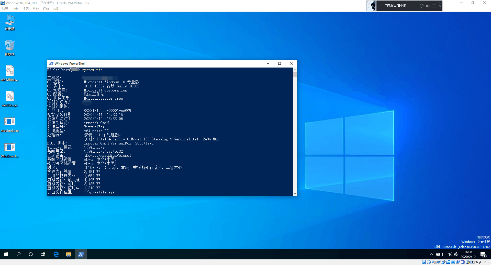

运行Poc后,结束进程,Windows立刻 BSOD,错误为BAD_POOL_CALLER (c2),出现异常的地址为0xfffff38440880000

虽然这样确实可以触发BSOD,但是我们根本不知道为什么这样会导致BSOD(逻辑错误,使用ExFreePoolWithTag释放了不属于Kernel Pool的内存)
下面是本人关于该漏洞的分析报告
首先输入k,查看函数调用堆栈
1: kd> k
# Child-SP RetAddr Call Site
.............
09 fffffc82`5efb12d0 fffff802`61d6a0a9 nt!ExFreeHeapPool+0x809
0a fffffc82`5efb13f0 fffff3d3`e44e945d nt!ExFreePool+0x9
0b fffffc82`5efb1420 fffff3d3`e4a97e47 win32kfull!Win32FreePoolImpl+0x4d
0c fffffc82`5efb1450 fffff3d3`e4b32c2a win32kbase!Win32FreePool+0x27
0d fffffc82`5efb1480 fffff3d3`e4a77a56 win32kbase!xxxDestroyThreadInfo+0xbfa12
0e fffffc82`5efb1650 fffff3d3`e44cfac6 win32kbase!UserThreadCallout+0x466
0f fffffc82`5efb1840 fffff3d3`e4ab2e87 win32kfull!W32pThreadCallout+0x76
10 fffffc82`5efb1870 fffff3d3`e483103b win32kbase!W32CalloutDispatch+0x367
11 fffffc82`5efb1a90 fffff802`61fd5d81 win32k!SysEntryGetDispatchTableValues+0x1b
.............
19 00000015`c4bff548 00007ffd`8f435d1b win32u!NtUserMessageCall+0x14
1a 00000015`c4bff550 00007ffd`8f449035 USER32!SendMessageW+0x27b
1b 00000015`c4bff5f0 00000000`00000000 USER32!SendMessageA+0x55
可以看到是win32kfull!Win32FreePoolImpl函数导致的异常,所以我们再次运行Poc,从win32kfull!Win32FreePoolImpl函数下条件断点
ba e1 win32kfull!Win32FreePoolImpl+0x46 "r rcx;.if(cx == 0){.echo 1}.else{.echo 2;g}"
为什么要判断cx是否为0呢,因为该函数经常调用,正常在函数下断点没办法下断,移动鼠标等均会调用该函数.并且释放的内存后7位固定为 0880000,所以用cx寄存器判断是否为释放的异常内存.
0: kd> r
rax=0000000000000000 rbx=fffffb4a00602080 rcx=fffffb4a00880000
rdx=0000000000000000 rsi=fffffb4a0317f8e0 rdi=fffffb4a00880000
rip=fffffb1764ee9456 rsp=ffffb00f4d261420 rbp=ffffb00f4d261750
r8=fffffb176524a110 r9=0000000000000001 r10=fffffb4a01237a30
r11=ffffb00f4d261460 r12=0000000000000001 r13=fffffb1765397988
r14=0000000000000000 r15=fffffb4a031898a0
iopl=0 nv up ei pl zr na po nc
cs=0010 ss=0018 ds=002b es=002b fs=0053 gs=002b efl=00000246
win32kfull!Win32FreePoolImpl+0x46:
fffffb17`64ee9456 48ff1563ed2600 call qword ptr[win32kfull!_imp_ExFreePoolWithTag (fffffb17`651581c0)]
用 Windbg的 !pool 指令检测池属性
0: kd> !pool rcx
Pool page fffffb4a00880000 region is Paged session pool
fffffb4a00880000 is not a valid large pool allocation, checking large session pool...
fffffb4a00880000 is not valid pool. Checking for freed (or corrupt) pool
Address fffffb4a00880000 could not be read. It may be a freed, invalid or paged out page
发现无法正常解析内核池,手动查看Pool Header结构是否被破坏
0: kd> dq rcx-10
fffffb4a`0087fff0 ????????`???????? ????????`????????
fffffb4a`00880000 00000000`00000004 00000000`00000000
居然是未分配的内存,并且未发现Pool Header,这块根本不是内核池,此时查看堆栈调用,发现上层函数为 win32kbase!Win32FreePool
win32kbase!Win32FreePool,仅将win32kbase!xxxDestroyThreadInfo传入的内存地址传给win32kfull!Win32FreePoolImpl,跟踪win32kbase!xxxDestroyThreadInfo函数

我们并没有 tagTHREADINFO 结构在Windows10上的符号,所以并不知道 tagTHREADINFO+0x2C8 处是什么结构(逆向后得知 tagTHREADINFO+0x2C8 为指向 tagSBTrack 结构的指针),由于不知道是什么函数设置了 tagTHREADINFO+0x2C8 处的内容,所以首先我们继续设置条件断点
ba e1 win32kbase!xxxDestroyThreadInfo+0x94 "r rsi;.if(poi(rsi+0x2C8) != 0){.echo 1}.else{g}"
rsi指向 tagTHREADINFO 结构体,判断 tagTHREADINFO+0x2C8 是否非0,如果非0,则断下查看是否为触发异常的内存地址.
win32kbase!xxxDestroyThreadInfo+0x94:
ffffdf09`7e5c32ac 4889b42488000000 mov qword ptr [rsp+88h],rsi
1: kd> dq rsi+2c8 l1
ffffdf29`031792d8 ffffdf29`00880000
发现依然为触发异常的内核地址,接着笔者跟踪了
win32kbase!UserThreadCallout
以及
win32kfull!W32pThreadCallout
函数,发现均未设置Or 修改
tagTHREADINFO+0x2C8
,此时笔者修改Poc 在
SendMessage
前加入调试断点,在WinDbg中断下后,保存虚拟机快照,并直接触发漏洞,寻找修改
tagTHREADINFO+0x2C8
处结构的地址
断下后,rsi=fffffe464319c010,恢复快照,下内存写入断点,查看是那个函数写入到0xfffffe464319c010+0x2C8处
Ba w8 0xfffffe464319c010+0x2C8
1: kd> g
Breakpoint 0 hit
win32kfull!xxxSBTrackInit+0xee:
0010:fffffe25`69046046 8b45bb mov eax,dword ptr [rbp-45h]
断下后,发现 win32kfull!xxxSBTrackInit 会将由Type isolation分配的tagSbTrack结构写入到
tagTHREADINFO+0x2C8
处
TypeIsolation,为Windows10 1709后引入的新的缓解措施
( Win32k typeisolation),
正是该机制导致的BSOD,该函数返回一个
Nt!MmCommitSessionMappedView
映射出的内存,而并非Kernel Pool,使用ExFreePool释放内核池自然会触发异常,导致BSOD.
Word下载:Windows10_1903_BSOD分析报告.doc
Poc下载:Poc.zip